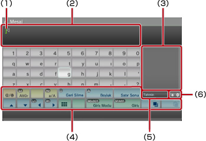
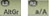
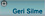
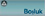
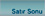
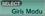
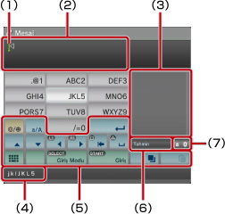
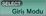
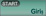

XMB™ hakkında > Klavyeyi kullanma
Klavyeyi kullanma
Metin girişi gerektiğinde klavye otomatik olarak görüntülenir. Bu yönergeler İngilizce klavye kullanıldığını varsaymaktadır. Diğer dillerde klavyeler kullanma hakkında bilgi için, ilgili dilin kullanım kılavuzuna bakın.

(1) |
İmleç |
|---|---|
(2) |
Metin girişi alanı |
(3) |
Tahmin seçeneklerini görüntüler |
(4) |
Çalıştırma tuşları |
(5) |
Tahmin modu açıkken görüntülenir |
(6) |
Giriş modu ekranı |
Tuşların listesi
Görüntülenen tuşlar giriş moduna ve diğer koşullara bağlı olarak değişir.
 |
Bir sembol veya ifade ekler |
|---|---|
 |
Girilen karakterlerin türünü değiştirir |
| İmleci hareket ettirir | |
 |
İmlecin solundaki karakteri siler |
 |
Bir boşluk ekler |
 |
Bir satır sonu ekler |
 |
Metni kopyalar veya yapıştırır |
 |
Mini boyutta klavyeye geçer |
 |
Giriş modunu değiştirir |
| Yazılan, ancak girilmeyen karakterleri onaylar / Klavyeden çıkar |
Karakterler girme
Tahmin modunu kullanarak sözcüğün ilk birkaç harfini girebilirsiniz, bu harflerle başlayan, sık kullanılan sözcüklerin bir listesi gelir. Sonra istediğiniz sözcüğü seçmek için yön düğmelerini kullanabilirsiniz. Metin girmeyi tamamladıktan sonra, klavyeden çıkmak için "Enter" tuşunu seçin.
İpuçları
- Bazı giriş modlarında ifadeleri kullanamayabilirsiniz.
- Metin girişi için kullanabileceğiniz diller desteklenen sistem dilleridir. Örneğin, sistem dili Fransızca olarak ayarlandıysa, metni Fransızca girebilirsiniz.
 (Ayarlar) >
(Ayarlar) >  (Sistem Ayarları) > [Sistem Dili] öğesine giderek sistem dilini ayarlayabilirsiniz.
(Sistem Ayarları) > [Sistem Dili] öğesine giderek sistem dilini ayarlayabilirsiniz.  + L1 düğmelerine aynı anda basarak tüm metin girişi alanını temizleyebilirsiniz.
+ L1 düğmelerine aynı anda basarak tüm metin girişi alanını temizleyebilirsiniz.
Bağlı klavyeyi kullanma
Bir USB klavye veya Bluetooth® klavye (her ikisi de ayrıca satılır) kullanarak metin girebilirsiniz. Metin giriş ekranı görüntülenirken, bağlı klavyede herhangi bir tuşa basarsanız, metin girişi ekranı bağlı klavyeyi kullanabilmenizi sağlar.
İpuçları
- Bir Bluetooth® klavye bağlama hakkında ayrıntılar için, bu kılavuzdaki (Ayarlar) >
 (Aksesuar Ayarları) > [Bluetooth® Cihazlarını Yönet] konusuna bakın.
(Aksesuar Ayarları) > [Bluetooth® Cihazlarını Yönet] konusuna bakın. - Bağlı bir klavye kullanırken tahmin modunu kullanamazsınız.
- ALT + ENTER tuşlarına basarak metin girişi alanında bir satır sonu ekleyebilirsiniz. Satır sonu yalnızca
 (Arkadaşlar) kategorisi altında bir mesaj yazarkenki gibi durumlarda kullanılabilir.
(Arkadaşlar) kategorisi altında bir mesaj yazarkenki gibi durumlarda kullanılabilir. - ÜST KARAKTER + GERİ tuşlarına aynı anda basarak tüm metin girişi alanını temizleyebilirsiniz.
- Ctrl + V ile kopyalanan metni yapıştırabilirsiniz. Son kopyalanan metin yapıştırılacaktır.
Mini boyutta klavye kullanma
Tam boyutta klavyeden öğesini seçerseniz, mini boyutta klavyeye geçecektir. Mini boyutta klavyede, birden fazla karakter tek tuşa atanır.

(1) |
İmleç |
|---|---|
(2) |
Metin girişi alanı |
(3) |
Tahmin seçeneklerini görüntüler |
(4) |
Seçili tuşu kullanarak girilebilen karakterleri görüntüler. |
(5) |
Çalıştırma tuşları |
(6) |
Tahmin modu açıkken görüntülenir |
(7) |
Giriş modu ekranı |
 düğmesine her bastığınızda, girilebilen karakter değişir. Örneğin, [L] girmek için,
düğmesine her bastığınızda, girilebilen karakter değişir. Örneğin, [L] girmek için,  öğesini seçin ve
öğesini seçin ve  öğesini kullanın, böylece [L] öğesinden sonraya konumlanır. Sonra
öğesini kullanın, böylece [L] öğesinden sonraya konumlanır. Sonra İpucu
Tek dokunuşla metin girişi yöntemini de kullanabilirsiniz. Metin girişi yöntemini değiştirmek için "Seçenekler" tuşunu kullanın. Tek dokunuşu kullanırken, seçili her tuşta bir harften (veya numaradan) yapılan kombinasyonlar kullanılarak oluşturulabilen sözcükler tahmini metin girişi seçenekleri olarak görüntülenir. Örneğin, "DEF3" tuşunu seçerseniz, d, e, f veya 3 ile başlayan sözcükler ekran klavyesinin sağ tarafında bulunan tahmin seçenekleri penceresinde listelenir. ">" sembolü görüntülenirse, tahmin seçenekleri görüntülenene kadar harfleri girmeye devam edin.
Tuşların listesi
Görüntülenen tuşlar giriş moduna ve diğer koşullara bağlı olarak değişir.
 |
Bir sembol ekler |
|---|---|
 |
Büyük küçük harf arasında geçiş yapar |
 |
Bir satır sonu ekler |
| İmleci hareket ettirir | |
 |
İmlecin solundaki karakteri siler |
 |
Bir boşluk ekler |
|
Metni kopyalar veya yapıştırır |
 |
Tam boyutta klavyeye geçer |
 |
Seçenekler menüsünü görüntüler |
 |
Giriş modunu değiştirir |
 |
Yazılan, ancak girilmeyen karakterleri onaylar / Klavyeden çıkar |